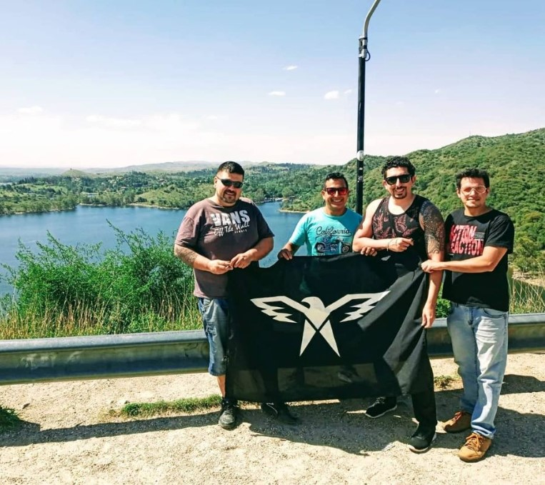

- 
Somos...
Con 15 años de trayectoria, somos un equipo de Airsoft conocido no solo en Córdoba, sino también en otras provincias por el impacto de nuestra presencia en cada juego. Llevamos el Airsoft a un nivel competitivo justo y equilibrado, manteniendo un alto rendimiento sin olvidar que este deporte es, ante todo, una fuente de diversión y buenos momentos. Participamos activamente en todas las actividades de Airsoft de la provincia de Córdoba, además de realizar prácticas cerradas y eventos con equipos invitados. Nuestra pasión y dedicación nos han convertido en referentes dentro de la comunidad.
Nuestros valores
En AGUILAS, el respeto y el honor son nuestros pilares fundamentales. Creemos firmemente que jugar limpio en el Airsoft lo hace más divertido, real y emocionante. Promovemos buenas prácticas, el juego limpio y la camaradería tanto dentro del equipo como con otros jugadores. Para nosotros, el respeto es esencial, no solo hacia las personas, sino también hacia el deporte. Estos valores nos unen y nos distinguen, garantizando experiencias enriquecedoras y memorables para todos.
Por que nosotros?
Porque AGUILAS no es solo un equipo de Airsoft, somos un grupo de amigos que comparte momentos, risas, cumpleaños, viajes y que cree, cualquier excusa, es buen motivo para juntarse, ya sea un taller de marcadoras, entrenamiento o simplemente un asado. Nuestro compromiso es total, y eso nos ha posicionado como exponentes en Córdoba en juegos de todos los tamaños, desde los más pequeños hasta los BIG games y eventos extremos. Los miembros de AGUILAS suelen ser seleccionados para comandar y liderar unidades, reflejando nuestra experiencia y dedicación. Además, llevamos a cabo prácticas semiprofesionales en tácticas de campo, movimientos de escuadra, uso de radios y puesta a punto de marcadoras, garantizando que siempre dejemos una huella en cada juego en el que participamos.
Mantener nuestra aspirancia abierta no solo fortalece nuestro equipo, sino que también enriquece el deporte en sí. Somos una escuela de Airsoft creemos que al guiar a jugadores sin experiencia en buenas prácticas y juego limpio, sin importar si completa la aspirancia o no, estamos formando futuros camaradas de equipo, líderes de unidad y hasta dignos oponentes. Al promover un juego honesto y respetuoso, mejoramos la experiencia para todos los involucrados, asegurando que cada partida sea emocionante, justa y memorable para todos los jugadores.
Un poco de nosotros
AGUILAS es un equipo de aspirancia abierta, donde cualquier jugador, ya sea nuevo o experimentado, puede encontrar su lugar si así lo desea. No creemos en elitismos ni en superioridades autoimpuestas.
Nuestro sistema de aspirancia permite a los nuevos candidatos transitar su curva de aprendizaje en el deporte de manera integral. Fuera del campo, conocerán a los miembros del equipo, generarán lazos y aprenderán los conceptos básicos del juego y las buenas prácticas del juego limpio. Dentro del campo, observarán cómo el equipo se mueve, cómo enfrenta situaciones y cómo resuelve objetivos de juego. Guiamos a los nuevos integrantes en la adquisición del equipo correcto, ofreciendo recomendaciones y sugerencias basadas en nuestra experiencia. Nuestra meta es formar a los nuevos integrantes para que, en el futuro, puedan transmitir lo que hoy el equipo les ha enseñado, asegurando la continuidad de nuestros valores y conocimientos.
No somos normales, pero...
Creemos que mantener nuestra aspirancia abierta enriquece al equipo, permitiendo que cualquier persona que comparta nuestra pasión y valores se una a nosotros.
Queremos que cada nuevo integrante sienta que forma parte de un grupo de amigos y compañeros, y que juntos sigamos creciendo y disfrutando de este apasionante deporte.
Si buscas disfrutar del deporte, pasarla bien, reírte y tomarte el Airsoft en serio pero con un espíritu divertido,
¡Unete a AGUILAS!
Aquí encontrarás camaradería, desafíos y mucha diversión. ¡Esperamos verte en el campo de batalla!